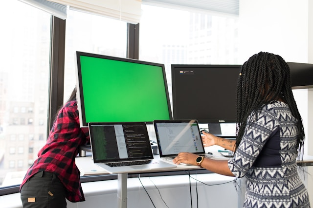

Vaardigheden

Bij NextStep Solutions zijn specifieke vaardigheden van groot belang voor succes. Voor kandidaten met een HBO-Open-ICT-achtergrond verwachten we dat zij een solide basiskennis hebben van verschillende programmeertalen, zoals Java, Python of C#, evenals praktische ervaring met Agile-methodologieën zoals Scrum of Kanban. Deze vaardigheden zijn essentieel voor het efficiënt werken binnen onze ontwikkelteams. Daarnaast wordt kennis van cloudtechnologieën, zoals AWS of Azure, sterk gewaardeerd, evenals ervaring met DevOps-principes, die bijdragen aan een soepele integratie van ontwikkeling en operationele processen. Cybersecurity speelt eveneens een belangrijke rol binnen ons bedrijf, aangezien wij veilige en betrouwbare IT-oplossingen leveren. Bovendien is sterke communicatie een sleutelvaardigheid: kandidaten moeten effectief kunnen samenwerken in multidisciplinaire teams en helder communiceren met zowel collega's als klanten. Deze combinatie van technische en interpersoonlijke vaardigheden stelt ons in staat om innovatieve, hoogwaardige IT-oplossingen te ontwikkelen die aansluiten bij de behoeften van onze klanten.
Vereisten

Bij NextStep Solutions stellen we als minimale eis dat kandidaten beschikken over een afgeronde hbo-opleiding in ICT. Deze opleidingsachtergrond is van cruciaal belang voor het succesvol werken aan onze geavanceerde technologische oplossingen. Door de aard van ons werk, dat zich richt op innovatieve softwareontwikkeling, netwerkbeheer en cybersecurity, verwachten we dat onze medewerkers een diepgaande technische basis hebben. Het is belangrijk dat kandidaten vertrouwd zijn met actuele ICT-trends en -technologieën, zodat zij effectief kunnen bijdragen aan onze voortdurende groei in de digitale wereld. Daarnaast verwachten we dat zij in staat zijn complexe uitdagingen op te lossen en snel kunnen schakelen binnen onze dynamische en snel veranderende branche. Deze fundamentele kennis en vaardigheden helpen onze medewerkers niet alleen om hoogwaardige oplossingen te ontwikkelen, maar ook om onze klanten te ondersteunen met robuuste en toekomstbestendige systemen.
Scrum
Bij NextStep Solutions worden naast user stories ook learning stories gebruikt. Dit zijn persoonlijke leerdoelen die teamleden voor zichzelf opstellen aan het begin van elke sprint. Terwijl user stories gericht zijn op klantresultaten, focussen learning stories op wat elk individu wil leren, zoals nieuwe technologieën of vaardigheden. Aan het einde van de sprint worden deze doelen besproken, waardoor zowel productontwikkeling als persoonlijke groei centraal staan. Zo stimuleert NextStep Solutions continue verbetering binnen het team. Bij NextStep Solutions gebruiken teamleden naast user stories ook learning stories om persoonlijke leerdoelen per sprint vast te stellen. Dit bevordert zowel productontwikkeling als persoonlijke groei, doordat aan het einde van de sprint ook wordt gereflecteerd op wat er is geleerd.